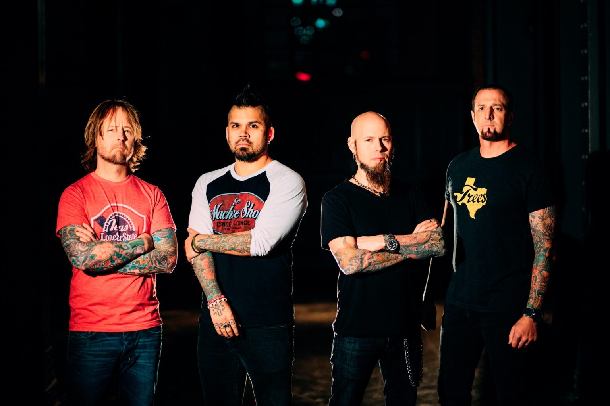

PRINCIPALES NOTICIA
VUELVE EL KNOTFEST A COLOMBIA 2022
la primera fecha Latinoamericana del festival para este año reunirá, el próximo 9 de diciembre en el Complejo El Campín de Bogotá, al cartel pesado más contundente. Judas Priest, Pantera, Bring Me The Horizon, Hypocrisy, Trivium, Venom, Sepultura y Suicide Silence, son solo algunos de los tantos artistas que se unirán a esta tercera edición en el país.
En medio de su gira de 50 aniversario, Judas Priest regresan gritando por venganza al trono de Knotfest, como héroes fundacionales y dioses absolutos del heavy metal, celebrando una carrera que continua arrasando todo a su paso. La reagrupación de Pantera, es por fin un hecho, y Knotfest hace posible su exclusiva para Colombia. El cantante Phil Anselmo y el bajista Rex Brown, llegarán a Bogotá junto al guitarrista Zakk Wylde (Ozzy Osbourne, BLS) y al baterista Charlie Benante (Anthrax) para honrar la memoria de los hermanos Abbott.
Suicide Silence y Walls Of Jericho, en voz de la poderosa de Candance Kucsulain, será una dupla de shows que promete más breakdowns rompe cuellos y agresión (en clave hard y death-core) de lo que puede soportar el fanático humano promedio.
Sin embargo, el anuncio no pareció agradarles a algunos internautas que esperaban con gran ilusión que dentro del cartel estuviera la banda estadounidense de metal Slipknot, pues esta estará presente en las versiones del festival que se llevará a cabo en otros países de Latinoamérica como Argentina, Chile y Brasil.

JUDAS PRIEST CREA SU PROPIO WHISKY
La banda de Heavy Metal "JUDAS PRIEST" tuvo que posponer la celebración de su 50º aniversario debido por la pandemia del coronavirus pero eso no ha hecho que detengan sus giras por ese motivo y que, además, St. Kilian Distillers se haya unido al grupo de Heavy Metal para crear dos ediciones limitadas de whisky de Malta. Estarán disponibles desde este 25 de septiembre.
La Edición Aniversario "50 Heavy Metal Years", limitada a 12.300 botellas, obtuvo su carácter único de la malta de cebada suavemente ahumada sobre fuegos de madera de haya. Este whisky de malta ahumado de cuatro años se maduró en su mayor parte en antiguas barricas de bourbon y se combinó con whisky de barricas de brandy de Jerez y rye, que aportan un cremoso dulzor frutal al humo de la madera.
Para la edición "Angel of Retribution", en cambio, se utilizó malta de cebada ultrapesada con 91 "partes por millón" (ppm), que procede directamente de las Highlands escocesas y encarna el Heavy Metal en su forma más pura. Se llenaron 950 botellas de esta malta de cuatro años, que recibió una maduración completa única en barricas francesas de 300 litros de Pineau des Charentes y ofrece una verdadera explosión de sabor a humo de turba, fruta y especias.

Drowning Pool publica caótico single «A Devil More Damned»
Drowning Pool está promocionando su nuevo disco «Strike A Nerve», el cual será puesto a la venta este 30 de septiembre a través de la disquera T-Boy/UMe y estrenó el single «A Devil More Damned». DROWNING POOL ha sido aclamado durante mucho tiempo como campeones del hard rock y el metal de cuello azul, no solo por sus espectáculos en vivo consistentemente incendiarios y su catálogo enormemente impresionante, sino por las pruebas y tribulaciones que han marcado su carrera. No son únicos en ese sentido. Lo que son es resistente, su ethos de clase trabajadora y hombre común y su obstinada perseverancia crean un vínculo que pocas bandas logran.
«Strike A Nerve» se inspiró en llevar las cicatrices de la batalla de la vida en nuestras mangas. Esos golpes y moretones se magnificaron durante los bloqueos de COVID en todo el mundo; bloqueos que comenzaron apenas unos meses después de que DROWNING POOL terminara de grabar, mezclar y masterizar «Strike A Nerve», un tour de force de 11 canciones a través de la psique desgarrada y maltratada de una banda. Escrito y grabado antes de la pandemia que paralizó al mundo durante más de dos años, «Strike A Nerve» se volvió más conmovedor con su tiempo en el estante.
Creado por: Kevin Ariza